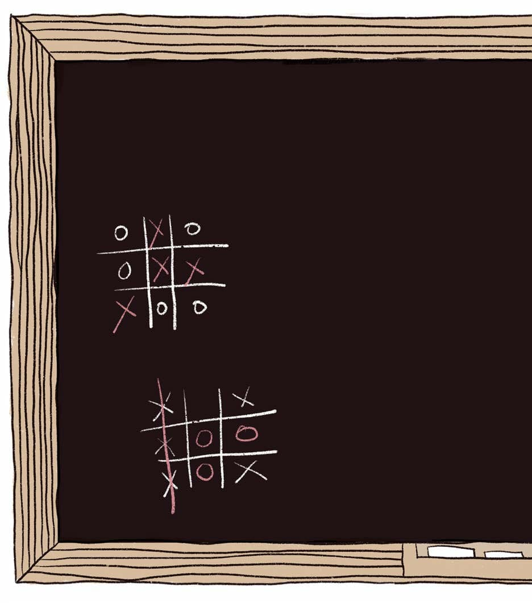
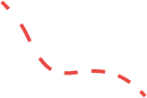
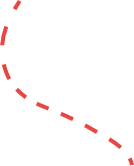
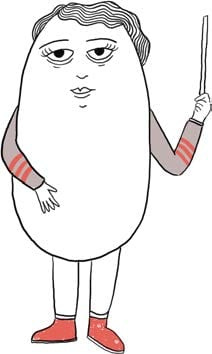
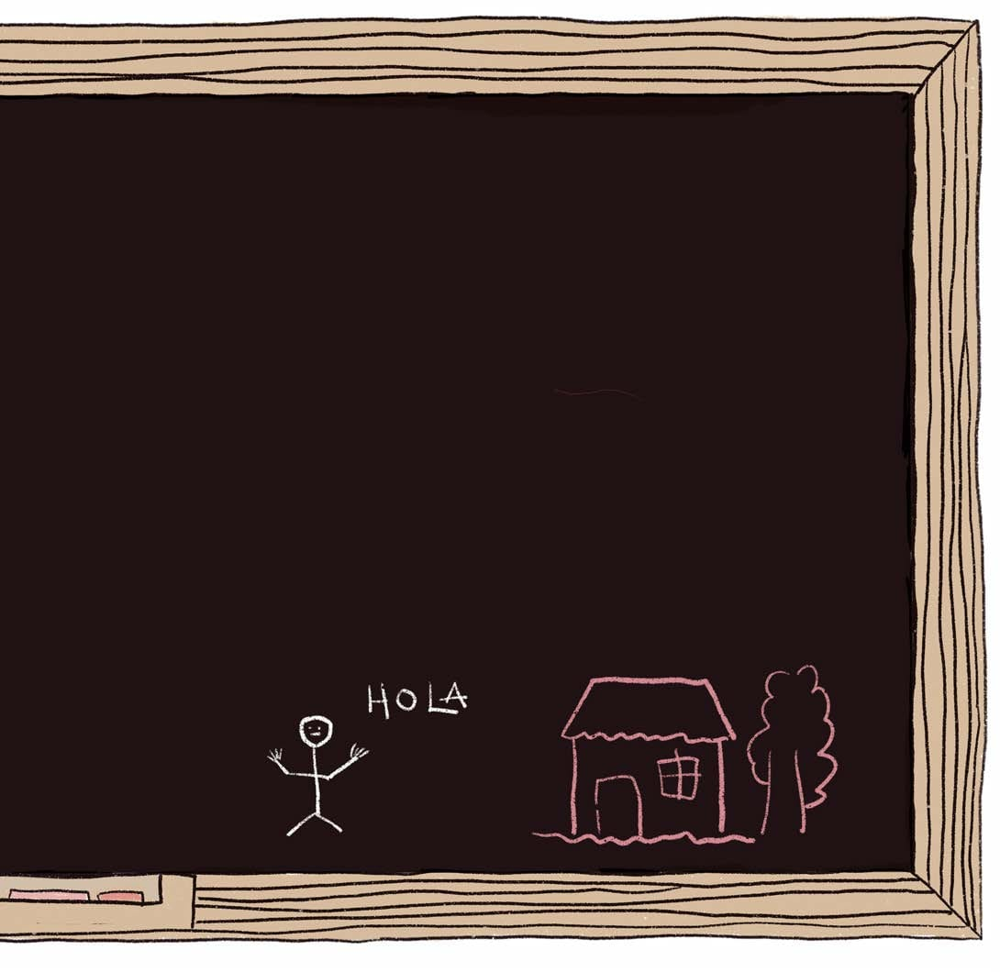
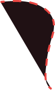
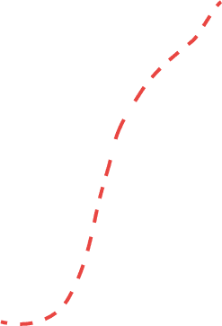

CIUDADANÍA DIGITAL
tiene que ver con los modos en los que habitamos Internet y nos relacionamos con otras personas
también con los derechos y las obligaciones en el entorno digital
supone cuidarse y cuidar a los demás, crear y participar
para ejercerla las personas necesitan: tener acceso a Internet, aparatos tecnológicos, saber cómo navegar online y conocer los hilos visibles e invisibles de su funcionamiento.